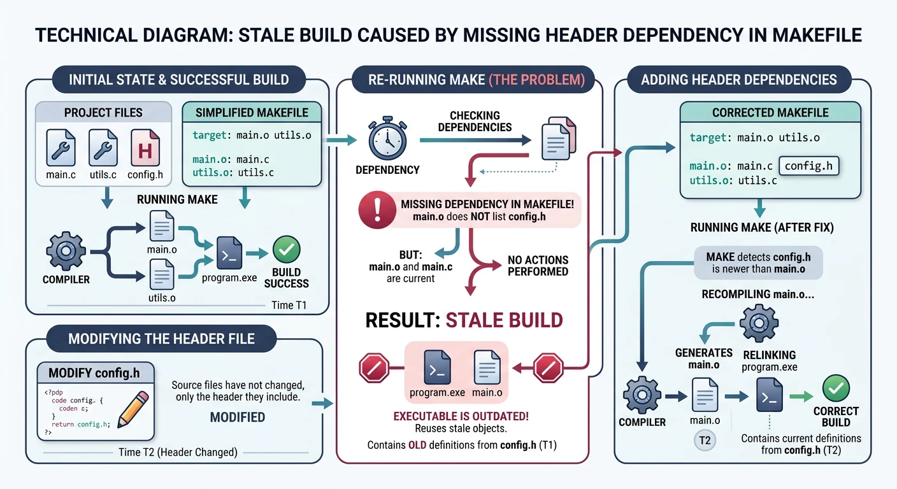
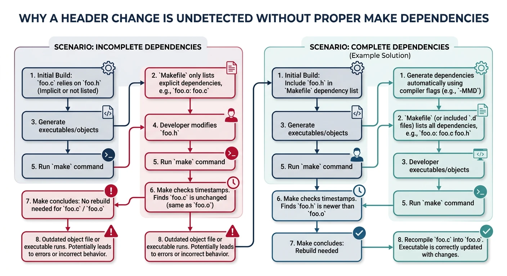
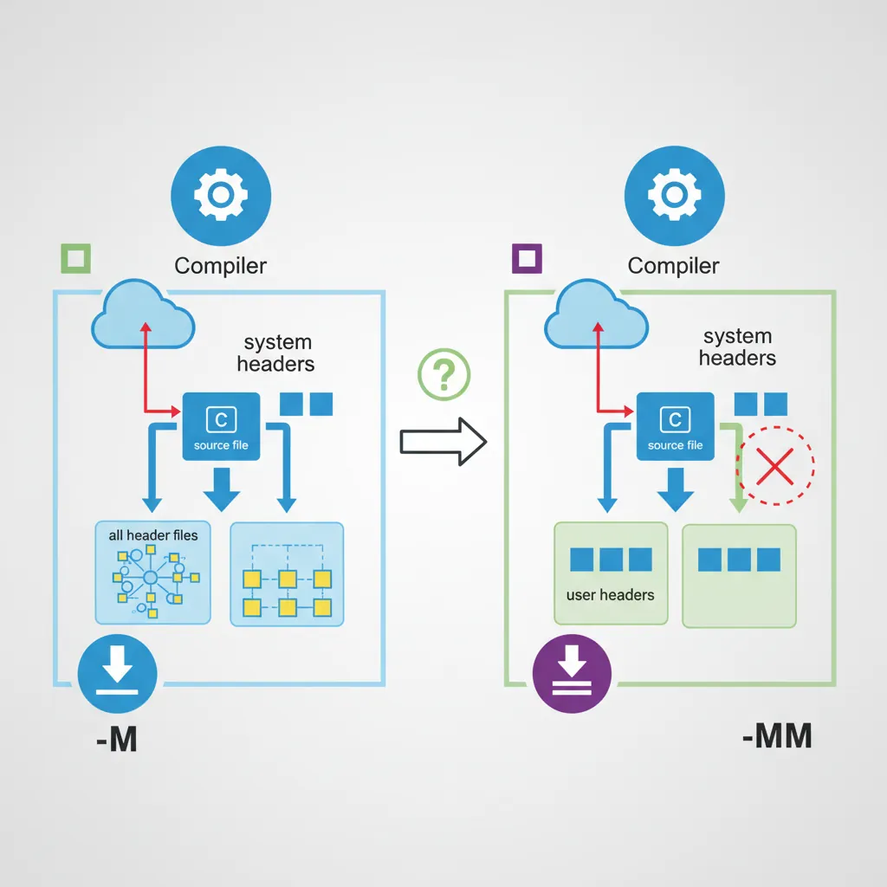
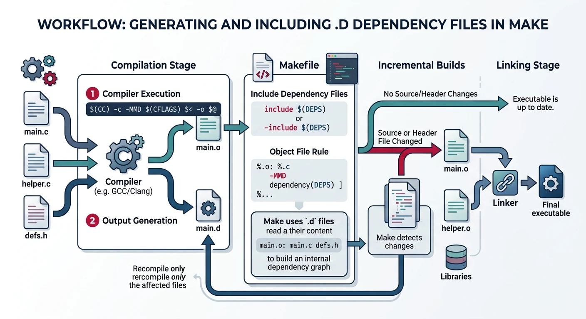
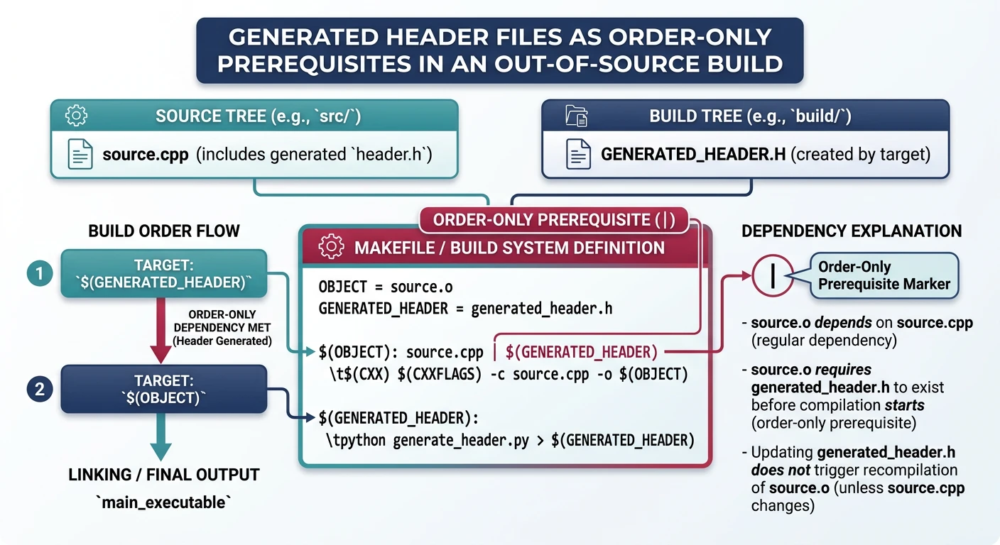

We use cookies to enhance your browsing experience, serve personalized content, and analyze our traffic. By clicking "Accept All", you consent to our use of cookies. See our Privacy Policy for more information.
GNU Make Mastery Part 7: Automatic Dependency Generation
February 23, 2026Wasil Zafar20 min read
Eliminate stale builds caused by header changes: use GCC's -MM, -MD, and -MP flags to auto-generate .d dependency files and include them so Make knows exactly which translation units to rebuild after any .h modification.
Part 7 of 16 — GNU Make Mastery Series. Up to now our Makefiles only track .c → .o dependencies. But a .c file can include dozens of headers. Change a header and nothing gets rebuilt — your binary silently becomes stale. This part fixes that completely.
Consider a project where main.c includes config.h. Our Makefile rule is:

The header problem: changing config.h triggers no rebuild because the Makefile doesn't list it as a prerequisite
# BUG: only lists main.c — missing config.h as a prerequisite!
main.o: main.c
$(CC) $(CFLAGS) -c main.c -o main.o
If we edit config.h and run make, Make sees that main.o is newer than main.c — so it does nothing. The resulting binary contains stale code that reflects the old header. This is a real-world source of extremely hard-to-diagnose bugs.

Without header dependencies, Make skips rebuilding even when included headers have changed
Naive Solutions & Their Flaws
Anti-pattern
Manually Listing Headers
# Don't do this — doesn't scale
main.o: main.c main.h config.h utils.h network.h crypto.h
$(CC) $(CFLAGS) -c $< -o $@
This works but becomes a maintenance nightmare in any non-trivial project. Add a new header to main.c and forget to update the Makefile — stale builds again.
Sample Source Files
Self-contained examples: Dependency-generation examples scan header includes in main.c and its headers. These stubs give the -MMD compiler flag realistic include chains to trace.
/* main.c — includes several headers to create a realistic dep chain */
#include <stdio.h>
#include "main.h"
#include "crypto.h"
int main(void) {
char hash[64];
crypto_hash("hello", hash, 64);
utils_greet(hash);
return 0;
}
GCC Dependency Flags
-M and -MM
-M instructs GCC to output a Make dependency rule listing all headers (including system headers). -MM is usually preferred — it omits system headers (/usr/include/) since those rarely change.

GCC dependency flags: -M lists all headers including system; -MM lists only user headers
Automatic Dependency Generation Flow
flowchart LR
SRC["main.c #include utils.h"] -->|"gcc -MMD -c"| OBJ["main.o"]
SRC -->|"gcc -MMD -c"| DEP["main.d main.o: main.c utils.h"]
DEP -->|"-include *.d"| MAKE["Makefile reads .d files"]
MAKE -->|"utils.h modified?"| REBUILD{"Rebuild needed?"}
REBUILD -->|"Yes"| RECOMPILE["Recompile main.c"]
REBUILD -->|"No"| SKIP["Skip (up to date)"]
style SRC fill:#e8f4f4,stroke:#3B9797
style DEP fill:#f0f4f8,stroke:#16476A
style MAKE fill:#132440,stroke:#132440,color:#fff
# Run manually to see what's generated:
gcc -MM main.c
# Output:
# main.o: main.c main.h config.h utils.h
-MD and -MMD — During Compilation
These flags make GCC write the dependency output to a .d file alongside normal compilation — no separate preprocessing pass needed. -MMD = -MM -MD (omit system headers, write to .d).
# GCC writes main.d during the regular compile:
gcc -Wall -c -MMD -MP main.c -o main.o
# Creates: main.o AND main.d
# Example contents of main.d:
main.o: main.c main.h config.h utils.h
main.h: # phony target added by -MP
config.h: # (prevents error if header is deleted)
utils.h:
-MP — Phony Targets for Headers
When a header is deleted and it still appears in a .d file, Make errors with "No rule to make target deleted_header.h". The -MP flag adds a phony (empty) target for each header, so Make silently ignores missing ones and just rebuilds the affected .o.
-MF — Custom Dependency File Path
# Write dependency file to a specific path (e.g., in a separate dep dir):
gcc -MMD -MP -MF build/deps/main.d -c main.c -o build/main.o
Including .d Files in Make
Include the generated dependency files at the end of your Makefile using -include (the - prefix suppresses errors on first build when .d files don't exist yet).

Dependency file workflow: GCC generates .d files during compilation; Make includes them on subsequent builds
CC := gcc
CFLAGS := -Wall -Wextra -std=c11 -O2
SRCDIR := src
BUILDDIR := build
DEPDIR := $(BUILDDIR)/deps
SRCS := $(wildcard $(SRCDIR)/*.c)
OBJS := $(patsubst $(SRCDIR)/%.c,$(BUILDDIR)/%.o,$(SRCS))
DEPS := $(patsubst $(SRCDIR)/%.c,$(DEPDIR)/%.d,$(SRCS))
TARGET := $(BUILDDIR)/myapp
.PHONY: all clean
all: $(TARGET)
$(TARGET): $(OBJS)
$(CC) $(LDFLAGS) -o $@ $^
# The key: -MMD -MP to generate .d file, -MF to specify output path
$(BUILDDIR)/%.o: $(SRCDIR)/%.c
@mkdir -p $(BUILDDIR) $(DEPDIR)
$(CC) $(CFLAGS) -MMD -MP -MF $(DEPDIR)/$*.d -c $< -o $@
# Include all .d files — silent on first build (no .d files yet)
-include $(DEPS)
clean:
rm -rf $(BUILDDIR)
How it works: On the first make, no .d files exist — the -include is silently ignored. GCC creates them during compilation. On the second make, the .d files are included, adding each header as a prerequisite of the corresponding .o. Now any header change triggers the right recompilation.
Generated Headers & Out-of-Source Builds
Some projects generate headers (e.g., from .proto files or configure scripts). These headers must be listed as prerequisites of the rules that generate them and as order-only prerequisites of the compile rules that use them.

Generated headers use order-only prerequisites to ensure they exist before compilation begins
BUILDDIR := build
# Rule to generate a header from a .proto file
$(BUILDDIR)/protocol.pb.h: protocol.proto
protoc --c_out=$(BUILDDIR) $< # $< = protocol.proto
# Compile rule: order-only prereq (|) ensures header is generated first
# but does NOT trigger recompile when header's timestamp changes
$(BUILDDIR)/handler.o: src/handler.c | $(BUILDDIR)/protocol.pb.h
$(CC) $(CFLAGS) -I$(BUILDDIR) -MMD -MP -c $< -o $@
For out-of-source builds where .d files contain absolute or different-prefix paths, use -MF explicitly to control where dependency files are written.
Hands-On Milestone
Milestone: A production-grade Makefile with full automatic dependency tracking — change any .h file and only the affected translation units rebuild.
# --- Try it: verify dependency tracking ---
make info # display all variable values
make # full build
ls build/*.d # see generated .d dependency files
cat build/main.d # inspect dependency chain for main.c
touch src/utils.h # simulate header change
make # only files including utils.h rebuild
touch src/crypto.h # simulate another header change
make # only crypto-dependent files rebuild
make clean # remove build artifacts
Continue the Series
Part 8: Compilation Workflow & Libraries
Build static and shared libraries with ar, -fPIC, and -shared; manage SONAME versioning and link order.